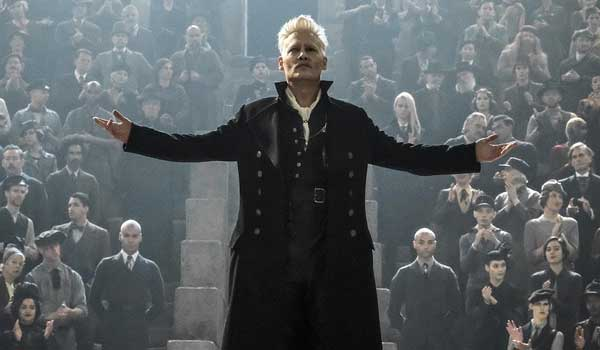
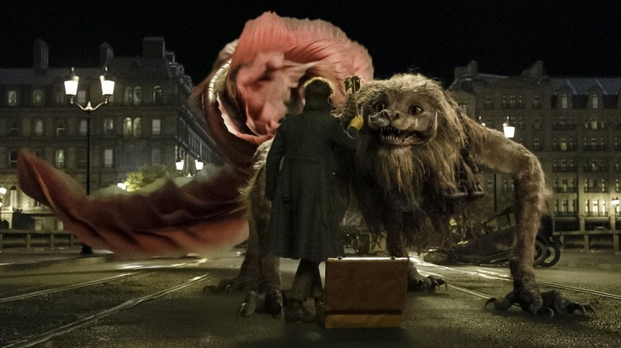
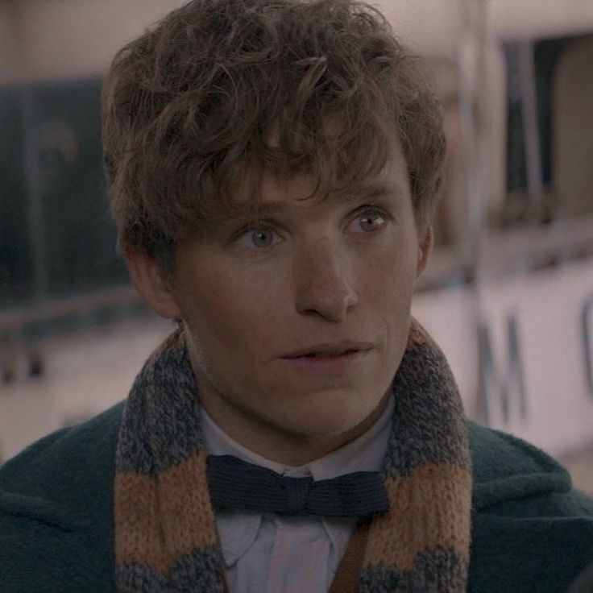

A saga de Animais Fantásticos começa com Newt Scamander, um magizoologista excêntrico e apaixonado por criaturas mágicas. Em sua viagem aos Estados Unidos, Newt chega em Nova York com sua mala mágica, cheia de criaturas fascinantes, mas logo se vê em meio a um caos quando algumas delas escapam e começam a causar problemas na cidade. É nesse momento que o destino de Newt se entrelaça com os de outros personagens essenciais, como Jacob Kowalski, um trouxa (não-bruxo) que se envolve acidentalmente na história, e as irmãs Tina e Queenie Goldstein, duas bruxas com papéis importantes na trama.
Enquanto Newt lida com suas criaturas mágicas, uma sombra sombria se forma nas sombras do mundo bruxo. Gellert Grindelwald, um bruxo das trevas carismático e altamente perigoso, começa a ameaçar a paz e a ordem entre bruxos e trouxas. Com suas ideias radicais de superioridade dos bruxos sobre os trouxas, ele provoca uma série de incidentes e começa a construir um exército de seguidores. Sua busca por poder e dominação culmina em confrontos que moldarão o futuro da magia.
Com o avanço de Grindelwald, Newt e seus amigos se veem em uma batalha mais ampla. Newt, com sua habilidade única de entender e cuidar das criaturas mágicas, torna-se uma peça chave na luta contra a ascensão do bruxo das trevas. A história de Animais Fantásticos vai revelando como o mundo bruxo lida com a ameaça de Grindelwald e, gradualmente, como ele começa a se tornar o vilão mais perigoso antes de sua derrota definitiva. Ao longo dos filmes, Newt e seus aliados enfrentam desafios, criaturas, e dilemas morais, enquanto tentam impedir que Grindelwald espalhe ainda mais o caos. Além disso, vemos o crescimento das tensões que um dia resultarão na famosa Batalha de Hogwarts e a ascensão de Dumbledore como o maior oponente de Grindelwald.
Ao final, Newt Scamander se torna uma figura central no mundo mágico, não só por suas contribuições ao estudo das criaturas mágicas, mas também por ser parte essencial na resistência contra as forças das trevas. Seu livro, Animais Fantásticos e Onde Habitam, é uma obra fundamental para os estudantes de Hogwarts e além, marcando sua trajetória como um dos bruxos mais respeitados de sua época.
